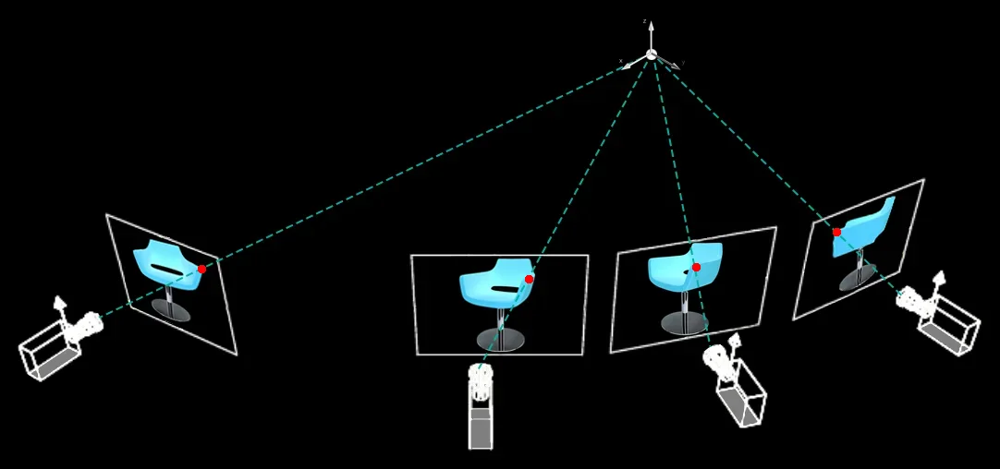

Cuban Chug Exhibition Notes
My work in Let The Mirror Express the Room is a grey, 50cm model of a shipwreck that washed up on a beach in Sligo. It sits on a metal-frame plinth topped by an orange-coloured sheet of acrylic and around the base of the plinth are a scattering of orange and red life jackets.
The work’s title is a location, Cliffony Beach. That’s where I read the shipwreck had washed up and where I drove to with my camera, tripod and tape measure to find. I’ve made several works whose starting point has been articles in newspapers. I don’t read to find stories to make art about, I read newspapers to find out what’s going on, but sometimes (every couple of years) an article speaks to something I’ve been thinking about or resonates with what I’ve experienced and spurs me on to inquire further. I benefit from the work the journalist has put in, their research condensed into a single article triggers my reaction. And sometimes the title for the work comes from the article, and in this case it’s the location. Because the location is the key point of the news story.
A man out walking his dog at the end of January 2017, came across the shipwreck, made from a welded metal frame with Styrofoam buoyancy stuffed between the ribs, with the outside of the boat covered in a yellow tarpaulin. He posted pictures on a Facebook page for a group interested in items washed up from the sea. A member based in the US sent the man back to look at the labels on the empty sealed water bottles that had also been part of the buoyancy. When the response was Ciego Montero
a brand of Cuban bottled water, named after the small town, where the spring comes from, then the member confirmed the boat’s similarity to what are known as Cuban Chugs
used by Cuban migrants trying to get to the US, that wash up around Key West in Florida. The shipwreck was traced more than 6,700 kilometres across the Atlantic – to Cuba.
So that’s the story, or at least people’s fascination with the story - that living on an island, invisible sea currents connect us to people and places well beyond national borders. Though speaking different languages and having different cultures we are connected, by the sea, where items don’t pass through airline passenger gates or passport control, are not impeded by commerce or bureaucracy, they just wash up on our shores.
One iconic tourist image of Cuba is the vividly coloured, vintage American cars imported prior to the United States embargo of exports to Cuba in the late 1950’s. Some 60,000 of these Cadillacs, Chevrolets, Fords and Dodges are still driving. The only way to keep these cars on the road is by being resourceful in modifying household products and Soviet technology to make replacement parts.
Though it may not have as much tourist appeal, that same ingenuity is evident in this shipwreck. Cuban Chugs
are so called because of the noise their engines, often repurposed from cars, make as they slowly move across the water. The Cliffony boat was ingeniously powered by a car engine, the drive belt still in place. On the 3D printed model, you can see the car engine and battery, you can also identify where the propeller was sawn off the boat (between the story making the news and when I got to the site). On the one hand you want to celebrate the making of the object with impoverished materials, the time it must have taken to compile the difficult-to-source materials and on the other, ask why anyone could be so desperate that they would risk their lives going out onto the ocean on such a boat.
The Florida Straits at their narrowest point between the US and Cuba are 150km or 93 miles. The Straits carry the powerful Florida Current that draws warm, salty water from the Gulf of Mexico into the north-bound Gulf Stream Current up the East Coast of the United States and across the Atlantic Ocean. Seasoned navigators, those who have on board VHF radios, Satellite communication, Emergency Position Indicating Beacons, radar to identify other boats in the shipping channel and plenty of fuel reserves, caution against making the crossing if the wind is blowing from the East where the winds and currents work against each other with the potential for some very rough seas.
One survivor said his journey of 18 people in a home-made raft took 3 days before the US Coast Guard picked them up. It rained for 2 days, they lost their food and had shark sightings. Another journey on a motorised raft took 6 days including 2 days of shelter on a deserted island. Not all journeys make it, some die and some go missing.
A relevant detail is that this boat washed up at the end of January 2017. It’s worth mentioning that eight days before the end of his administration on Jan 12, 2017, President Obama, as part of the thaw in relations between the US and Cuba, signed an end to the Wet Foot, Dry Foot policy that had allowed Cuban migrants who reached US shores to apply for permanent residency rather than be returned to Cuba.
The correct name for the process I've used to create the sculpture is called Structure-from-Motion (SfM), a term from the field of computer vision. It’s a technique used to reconstruct three-dimensional models from a series of two-dimensional photographs taken from different positions around an object.
In this process, the motion
refers to the movement of the camera around the object as it captures multiple overlapping images, usually with around 70% overlap between consecutive shots. This motion provides various perspectives of the object, which are essential for extracting depth and spatial information.
The structure
refers to the resulting 3D model, which is constructed as a digital data file called a point cloud - a collection of points in a three-dimensional coordinate sysem, each with X (east/west), Y (north/south), and Z (height) coordinates that correspond to a point on the exterior surface of the object.
To generate this point cloud, the software uses algorithms to identify matching features such as corner points (edges with gradients in multiple directions) across overlapping photos. Once matching features are found across multiple images, the software estimates the relative positions and orientations of the cameras.
After the camera positions and orientations are determined, the software virtually projects rays from the centre of each camera’s lens through the corresponding feature points on the image plane (the 2D surface of the photograph where the 3D scene is recorded).

Triangulation is then used to compute the 3D coordinates of these points by finding the intersection of these rays from two (or more) different camera views. This process converts the 2D feature points into precise 3D coordinates in space. All these points together form the point cloud.
The point cloud is converted into a polygonal mesh and then exported in the form of a printable digital file. This means the digital model can be brought into the real world as a physical object. 3D printing is a process where a computer-controlled machine creates a three-dimensional object by adding material layer by layer, following the design’s exact shape. Some people like to imagine it as a hot glue gun on a mechanical arm, continuously extruding material until the shape is fully built. The boat was printed on a Bambu Lab P1S consumer-level, rapid printer. Rapid
means it took 29 hours to print one half of the boat and 36 hours for the other.
While that might seem like an overly technical description of how the boat was made, it is important conceptually that the Cliffony boat is not an artist's impression - but a scientific or mathematical model of the actual object. The term indexicality
was coined by Charles Sanders Peirce within the field of semiotics to describe signs that establish a direct connection or correlation with their objects.
Indexicality in photography refers to the inherent quality of a photograph to be a direct trace or imprint of the physical world. A photograph is created by the action of light on a photosensitive surface: that is light bounces off the subject in front of the camera, enters the camera through the lens and physically imprints on the light sensitive film or digital sensor that electronically records the light patterns.
This process establishes a direct connection between the photographed object and the resulting photograph. Photography’s indexical nature gives it a distinct quality, in directly recording the physical presence and details of the subject compared to other art forms such as painting or drawing, which rely more on an artist’s subjective interpretation to create a resemblance or a symbolic interpretation.
Design and Violence began as a MoMA online curatorial experiment created by Paola Antonelli, Senior Curator, MoMA and Jamer Hunt, Design Critic, Parsons The New School for Design. The project was based on a phrase in Victor Papanek’s 1971 book, Design for the Real World. There are professions more harmful than industrial design, but only a very few of them
. The premise is that design has a history of violence that often goes unexplored, one which we have not come to terms with. In collaboration with MoMA, Michael John Gorman of the Science Gallery Dublin and researcher and curator Ralph Borland expanded the project into a co-produced exhibition in 2016.
A work in that exhibition that really struck me was Bomb Cloud Atlas created by Forensic Architecture, a group based at Goldsmiths College, University of London founded by Israeli architect Eyal Weizman in 2010. Unusual sources of videos and photos from social media, and video footage from news outlets about drone strike bombings, were used, through the process of photogrammetry, to recreate models in 3D print form, of four bomb plume clouds (what they call extremely ephemeral architecture) from various Middle Eastern conflicts. They are reconstructions of events that may only last 5 or 10 minutes which are then transformed into evidence which can be introduced into a legal setting such as the International Court of Justice.
As the issues are complex and not wanting to speak on behalf of others, it’s important that the indexical object rather than an artist’s subjective interpretation is presented. Overall, the Cliffony boat is arhetorical object
intended to encourage reflection and critical thinking. Looking at the boat, and knowing the purpose it was made for, makes us all witness to the situation of people's lives and the concurrent political and social context.
Amanda Ralph
January 2025
Notes made in preparation for Westmeath Artists Awards Talk on Saturday, January 18, 2025: Amanda Ralph, the 2024 Westmeath Artists Award winner, joining Benjamin Stafford visual arts curator at Visual, Carlow and Aoife Banks, Curator of Luan Gallery, for a discussion on her award-winning work.